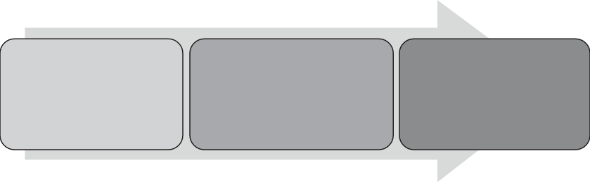

Nessa abordagem avaliativa, destacamos a importância da avaliação diagnóstica no início do processo de ensino, pois fornece subsídios para as práticas do professor ao longo do ano.
De acordo com Haydt:
A avaliação diagnóstica é aquela realizada no início de um curso, período letivo ou unidade de ensino, com a intenção de constatar se os alunos apresentam ou não domínio dos pré-requisitos necessários, isto é, se possuem os conhecimentos e habilidades imprescindíveis para as novas aprendizagens, é também utilizada para caracterizar eventuais problemas de aprendizagem e identificar suas possíveis causas, numa tentativa de saná-los (Haydt, 1992, p. 16-17).
Para garantir uma avaliação na perspectiva apresentada, César Coll (1999), psicólogo e especialista em currículo, propõe três momentos avaliativos:

Texto e Forma
AVALIAÇÃO DIAGNÓSTICA
Investigação do que o estudante já sabe sobre determinado assunto ou conceito.
AVALIAÇÃO FORMATIVA
Fornece dados para o acompanhamento do processo educativo como progressos, dificuldades e bloqueios.
AVALIAÇÃO SOMATIVA
Quantifica o nível de aprendizagem de um processo educativo sobre um conteúdo ou procedimento.
Sobre a avaliação formativa, Oliveira afirma que:
[...] o propósito deste tipo de avaliação é formar: fazer o que for preciso para que o aluno atinja os resultados previstos, ou mesmo para modificar os objetivos, dependendo dos resultados.
Ou seja, a avaliação formativa serve para corrigir rumos, rever, melhorar, reformar, adequar o ensino, de forma que o aluno atinja os objetivos de aprendizagem.
Nesse sentido, ela não avalia apenas o aluno, mas usa o desempenho do aluno para avaliar a adequação e eficácia do ensino (Oliveira, 2008, p. 337).
Esta coleção prevê diferentes momentos avaliativos destacados ao longo dos capítulos no Manual em U.
As propostas de avaliação que o professor irá encontrar em cada volume levam em consideração a pluralidade nos modos de aprendizagem da turma.
Desse modo, as avaliações permitem acompanhar o desenvolvimento dos estudantes no decorrer da construção de suas aprendizagens e possibilitam ao professor realizar intervenções pedagógicas necessárias para sanar as dificuldades da turma.
A seguir, um exemplo de ficha para registro e acompanhamento do processo de aprendizagem dos estudantes: